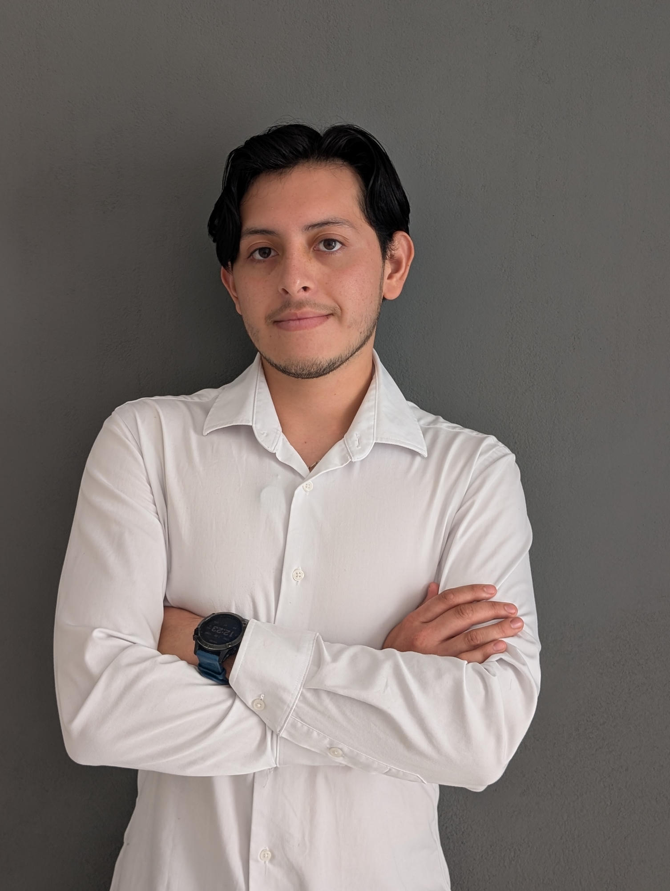

Ingeniero en Mecatrónica
Diseño mecánico · Automatización · Robótica. Llevo el ciclo completo de ingeniería del concepto al prototipo físico funcional — 12+ proyectos técnicos entregados con reporte formal.

Soy estudiante de Ingeniería Mecatrónica en la UPAEP con promedio de 9.16. Me apasiona el momento en que un diseño en CAD deja de ser un archivo y empieza a moverse en el mundo real.
Domino el ciclo completo: diseño mecánico en SolidWorks, simulación FEA/CFD, manufactura CNC con Esprit, fabricación en taller, e integración de electrónica y control con ESP32, Raspberry Pi, PLC y FANUC.
He liderado equipos técnicos como subcoordinador de electrónica y llevado más de seis proyectos del concepto al prototipo físico funcional. Busco prácticas profesionales donde poder resolver problemas reales de ingeniería.
Del CAD al hardware funcional. Cada proyecto integra diseño mecánico, electrónica y control.
Contenido educativo y de comunicación técnica. Porque saber ingeniería no sirve si no la puedes explicar.
Estoy buscando prácticas profesionales en diseño mecánico, automatización o robótica. Si tienes un proyecto o vacante, hablemos.